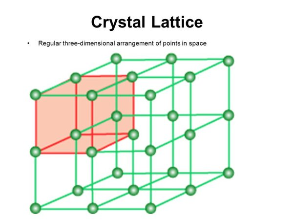
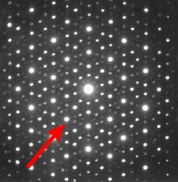

I stumbled upon them with my own research and chose to study at the Universit of Victoria because of my supervisor's research connections to quasicrystals. I will give a broad view of the story in this talk and if you're interested in how my research connects feel free to ping me. Quasicrystals were discovered because of the interplay between the fields of chemistry, mathematics and physics. And what really drew me to them, is how their existence created a paradigm shift in all three fields, it opened people’s eyes and forced them to consider something they previously thought was impossible. If you could choose for you to get one thing out of this talk, it's that both science and mathematics are alive and ever-changing and ever-updating fields. A lot of poeple think that mathematics is full of static truths, but in fact this is not really the case. Definitions are updated, information consolidated and made more abstract the field is ever calibrating to new information.
Crystallography
We begin with Chemistry and the study of crystals.
The story of crystallography dates back to Johannes Kepler in 1611, when he was too poor to purchase a gift, so he wrote an essay on snowflakes to give to his friend for Christmas. Apparently, he had noticed a snowflake on the lapel of his coat in Prague, and was curious about its geometry. It is believed that from this work, crystallography began: the exploration of how the geometric shapes of crystals can be explained in terms of the structure of their constituent particles.
Crystallography asks questions about the structure of crystals and how they are formed. Questions like why do snowflakes have six arms?
This animation shows the structure of a snowflake, molecules fitting together in the shape of a hexagonal ring with bonds forming between hydrogen of one molecule and the oxygen of another molecule. As more molecules join the growing crystal, they fit into a repeating shape.
What is a crystal?
"A substance in which the constituent atoms, molecules or ions are packed in a regularly ordered three-dimensional pattern."
-Walter White
We tend to assume that Nature is efficient and organizes itself for stability. The hypothesis that crystals are formed by a periodic arrangement of unit cells was the starting
point for the development of modern crystallography. Pure crystals were therefore believed to be made up of regularly-repeating components in the structure of a lattice in space. Regularly repeating is a key term here. For a long time, it was believed that the pattern was periodic. Note that things are not crystals are glass and silicone.

"A substance in which the constituent atoms, molecules or ions are packed in a periodically repeating three-dimensional pattern."
-Historic Definition
In a crystal lattice, it was assumed that we could build up a crystal by repeating it in the three different axes. What is meant by a periodic pattern is one for which we can translate over by multiples of a unit and leave it seemingly unchanged.
Symmetry
A symmetry is an action or transformation when applied to an object that leaves it seemingly unchanged.
The idea of an action on an object leaving it unchanged is called Symmetry! It can help us determine the structure of crystals and from there we can learn about things like stability, formation, etc. This picture depicts reflectional symmetry
Why is symmetry important?
The symmetries in the arrangement of atoms can help us understand the properties of the materials.
Elements can have very different properties based on how they are stacked together. Take for example graphite and diamond, both made up of just carbon but how carbon atoms are combined produces very different results.
Crystal structure and symmetry
Salt crystal NaCl
Let's take the example of a salt crystal. If we consider the front plane of the crystal we can investigate some of the symmetries it posseses. On the left we have an electron diffraction pattern, this is a tool crystallographers use to identify crystals and determine their symmetries. The bright spots are called Bragg peak, and indicate places that have defracted from the crystal, this is one way to determine that we have a crystal sample. For example, for an material such as glass whic his not considered crystaline, the diffraction pattern would look like noise. In this case, salt has four fold symmetry, this means that if the diffraction pattern were to be rotated by a 1/4 of a turn or 90 degrees about the axis coming into the center of this image, it would look as if it had not been moved at all. The rotated pattern would fall right on top of the original.And in fact, this can be proved mathematically.
Which symmetries are possible?
Which of the following regular polygons can tile the plane?
Imagine we have a fundamental unit, and we want to use it to create a periodic lattice. If one of these polygons is a unit, which one of them can be used repeatedly to tile the plane? This plane tiling is seeing as one of the faces of the crystal. If we think about the interior angles of each of these polygons, only the ones whose interior angles are a factor of 360 can be used to tile the plane.
Crystallographic Restriction
60 deg
90 deg
108 deg
120 deg
360/60 = 6
360/90 = 4
360/108 = 3.3...
360/120 = 3
Only 1,2,3,4 and 6 fold symmetry is possible.
Five fold or say 10 fold symmetry is impossible!
The triangle has a well known interior angle of 60 degrees, we know 60 goes into 360, 6 times and so we see a six fold symmetry about the axis going through each vertex of a triangle. The only possible rotational symmetries of a crystal are 1,2,3, 4 and 6. We see 6 fold in the tiling by equilateral triangles, 4 fold in the tiling by squares, 3 fold in the tiling of hexagons and 2 fold in tiling by squares as well. You could also see 2 fold in tilings by parallelograms such as a rhombus or rectangle. This came to be called the Crystallographic Restriction and was published in chemistry textbooks far and wide.
Dan Shechtman
The story begins in 1982 with a chemist who was studying rapidly solidified aluminum transition metal alloys, when he stumbled upon this alloy of aluminum and manganese on the right.
Forbidden Symmetry

"There can be no such Creature"
When he looked at its diffraction pattern he noticed something remarkable. First of all, it showed the distinctive bright spots of a crystal structure. But, looking more closely at the symmetry in this plane, showed something imposible. The pattern had 10 fold symmetry.
The scientific community was not so open-minded about the discovery.
"There are no quasicrystals, only quasiscientists."
Shechtman’s research group told him to ”go back and read [a first year chemisty] textbook” and a couple of days later ”asked him to leave for ’bringing
disgrace’ on the team.”
.
A paradigm shift
"Danny, this material is telling us something and I challenge you to find out what it is." -John W. Cahn
In spite of all this, Dan says that the experience was not as traumatic as it sounded. Scientists around the world had quickly replicated Shechtman's discovery and, had found crystal-like materials with 7 fold, 8-fold, 12-fold etc symmetry. The field of crystallography was experiencing a paradigm shift and there was a need to redefine how we think of crystals. Dan Shechtman was urged by his collaborators to dig deeper.
Aperiodically, means that the tiling has some order, finite patches of the tilling will repeat throughout the tiling, but it does not have translational order. No matter how you move the tiling around, it will never overlap back onto itself.
Penrose's Aperiodic tilings
Here we see tilings using two types of rhombuses and then also a kite and dart tiling on the right. When given special markings, they will only tile the plane aperiodically. They have the special property that any finite pattern in the tiling occurs infinitely often throughout the tiling. Some of the patches have a distinct five fold star rotational symmetry. In geometry, the number five seems to be very closely followed by the golden ratio. The number of kite to dart tiles in a patch of the tiling is given by a ratio of Fibonacci numbers and so approximates the golden ratio.
TransBay Railroad center in San Francisco
Penrose tiling toilet paper
People have become pretty obsessed with the Penrose tiling and have been putting them all over the place. I'm actually one of these people. One of my projects was to lasercut some penrose tiling coasters. Earlier there was an image of Roger Penrose standing on a tiling in the mathematics department at the University of Cambridge. Here is a picture of the facade of the TransBay Railroad center in San Francisco. There was even toilet paper made with the tiling printed on it. Unfortunately, Roger Penrose has a patent on the tiling and as soon as he found out, he sued Kleenex for making it. (show your coasters)
In 2023, ein stein "one stone" was discovered.
How do aperiodic tilings link to quasicrystals?
So now you may thinking, what do aperiodic tilings have to do with quasicrystals? Now we turn to physics to connect the ideas of mathematics with the puzzling discovery made by Dan Schechtman.
1984 Paul Steinhardt and his student Don Levine were inspired by the Penrose tiling and created a theory of a new kind of matter. Paul Steinhardt, an astrophysicist, was inspired by the Penrose tiling and thought that if the plane can be tiled aperiodically why not space as well? He coined the term quasicrystals and described them as models of aperiodic tilings of three dimensional space. The new theory overturned 200 years of scientific dogma. By changing the set of assumptions, quasicrstals went against all of the previously accepted mathematical theorems about the symmetry of matter. Symmetries once thought to be forbidden for solids are actually possible for quasicrystals, including solids with axes of ten-fold symmetry. Even more surprisingly, the two researchers had been working independendently, the only found out about each other when Steinhardt and his student Levine were shown a preprint of the Shechtman team's paper. Paul immediately recognized that Shechtman's discovery could be experimental proof of their still-unpublished quasicrystal theory. (Show your quasicrystal and paul's book)
You would think that with these two papers published that the alloy Dan Shechtman found would be readily accepted and he would be redeemed. But no. There was a lot of doubt surrounding both papers. Many theories came about to explain Dan Shechtman's discovery as a mistake. Each counter-theory that came about was disproved but skepticism remained. Dan Shechtman discvered an man made alloy, but it was believed that nature would never construct such a thing. Paul and Dan spent the next 26 years convincing the scientific community that quasicrystals should be considered as crystals and that a natural quasicrystal was possible.
Khatyrka Meteorite (2009)
A little bit before 2009, Paul got lucky. He was contacted by a researcher from Italy with a sample of a rock from Russia whose diffraction pattern had five fold symmetry. Paul could not idenfity the origin and formation of the sample. He sent it to several experts with very disappointing answers, the rock was believed to be slag or waste matter. He decided to take the matter into his own hands, literally. He and a team travelled to the barren arctic tundra in Russia, on an expedition to find another piece of this rock that could be more clearly identified. In 2009, his team had found a larger sample in the same place the previous sample had been found. It was verified that this quasicrystal had five fold symmetry and was found in the natural world within a meteorite that is 4.5 billion years old. Not only was this an amazing discovery, but this showed that quasicrystals were a stable state of matter. Nature was happy to tile things aperiodically.
“The quasicrystals and related metallic aluminum minerals found in the meteorite imply the existence of physical process in the early stages of the formation of the solar system that we did not know before; we are still trying to work them out.”
2011
In 1992, the International Union of Crystallography accepted that quasi-periodic materials must exist and altered its definition to the broader "any solid having an essentially discrete diffraction diagram". In 2011, Dan Shechtman won the Nobel prize in Chemistry for his discovery. "Dan Shechtman's Nobel prize celebrated not only a fascinating and beautiful discovery, but also dogged determination against the closed-minded ridicule of his peers, including leading scientists of the day." This story goes to show that sometimes it pays to believe in the impossible. The definition for a crystal is still being debated today. Quasicrystals are enshrouded in mystery and are actively being studied to this day.
(1611) Kepler write essay on geometry of snowflakes
(1960s) Wang conjecture disproved by Berger by aperiodic tiling consisting of 20000+ tiles
(1974) Penrose creates aperiodic tiling with two tiles
(1982) Dan Shechtman discovers quasicrystal
(1984) Shechtman, Blech, Gratias, Cahn. Paper on Quasicrystals published
(1984) Steinhardt, Levine. Coins term and publishes theory on quasicrystals
(2009) First natural quasicrystal found by Steinhardt team
(2011) Shechtman wins Nobel prize in chemistry
(2021) Quasicrystal found in Los Alamos nuclear blast.
(2023) Aperiodic tiling constructed using one tile
Alice laughed: "There's no use trying," she said; "one can't believe impossible things." "I daresay you haven't had much practice," said the Queen. "When I was younger, I always did it for half an hour a day. Why, sometimes I've believed as many as six impossible things before breakfast." Alice in Wonderland.